Grafana Guide: Tables
|
This content was generated with the assistance of AI and should be verified against the official documentation before being relied on in production. |
Checked on 2026-11-11 against Grafana 13.3.x.
What you build
You add a table panel called Requests per second by route to the dashboard Bookshelf (guides). It lists the four routes of the Bookshelf service with the request rate of each one, drawn as a gauge bar, with friendly column names, a column filter, a footer that adds up the rates, and a header you can click to sort the rows.
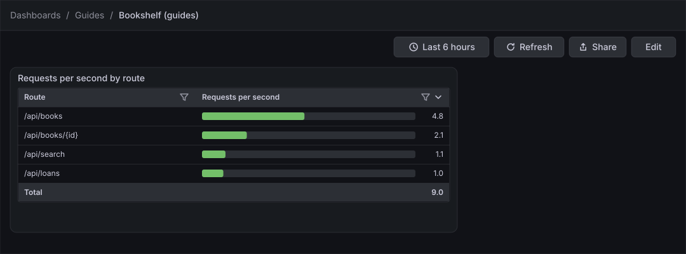
Before you start
-
Start the Grafana profile of the hands-on lab and wait about a minute:
cd lab docker compose --profile grafana up -d -
Open http://localhost:3000, sign in as
adminwith the passwordadmin, and click Skip when Grafana 13.3 asks you to update the default password. -
Do the guide Create a dashboard and the first panel first: it creates the folder Guides and the dashboard Bookshelf (guides) that this guide extends. The previous guide, Stat, gauge and bar gauge, is helpful but not required.
-
The data source Prometheus is provisioned by the lab and is the default data source. The load generator sends traffic to the Bookshelf service in its default mode, which gives the query something to list.
-
The guide was checked on Grafana Enterprise 13.3.0 (the free image, no licence key). Editing dashboards needs the Editor or Admin role of the organization;
adminhas it. -
The figures are drawings of the Grafana 13.3 user interface, not screenshots, so small details can differ from your screen. A highlighted box with a number marks the control of the step with the same number.
Steps
The panel editor used here is the one shown in the map of the first dashboard guide; come back to that map when a control is not where a figure shows it. You work in one panel editor from the query to the last option, and save once at the end.
Open the dashboard and add a panel
-
In the left navigation, click Dashboards, open the folder Guides and click Bookshelf (guides).
-
Click Edit at the top right.
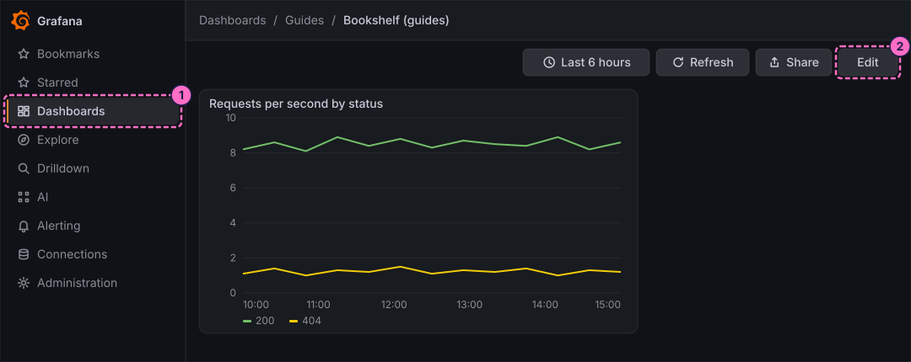
-
In the toolbar, click Add.
-
In the Add pane of the right sidebar, click the Panel tile.
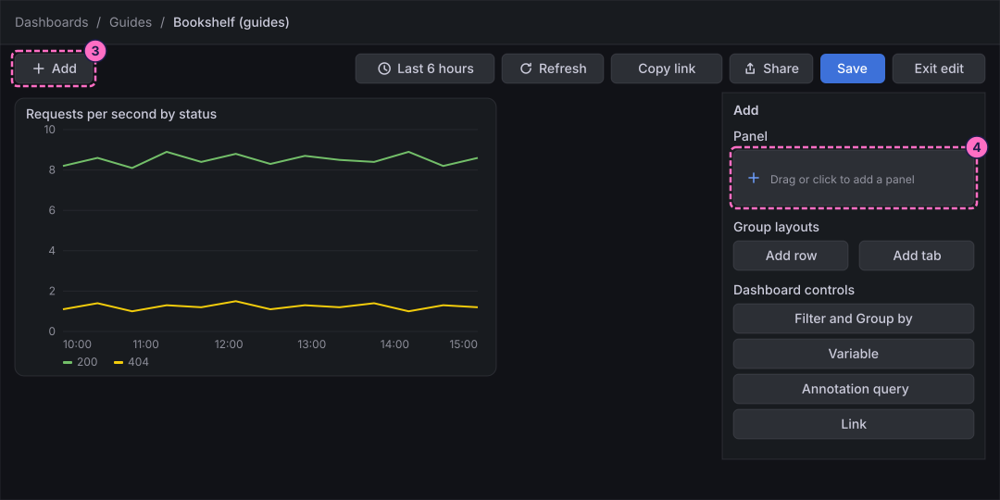
-
In the Panel pane that replaces the Add pane, click Edit visualization.
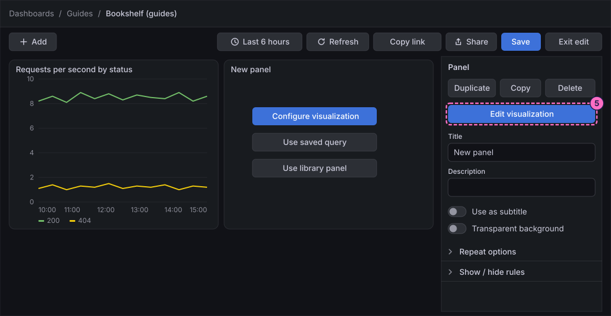
Query the request rate by route
-
At the bottom of the panel editor, check that the Queries tab is selected and that Data source shows Prometheus.
-
In query A, click Code in the Builder / Code switch.
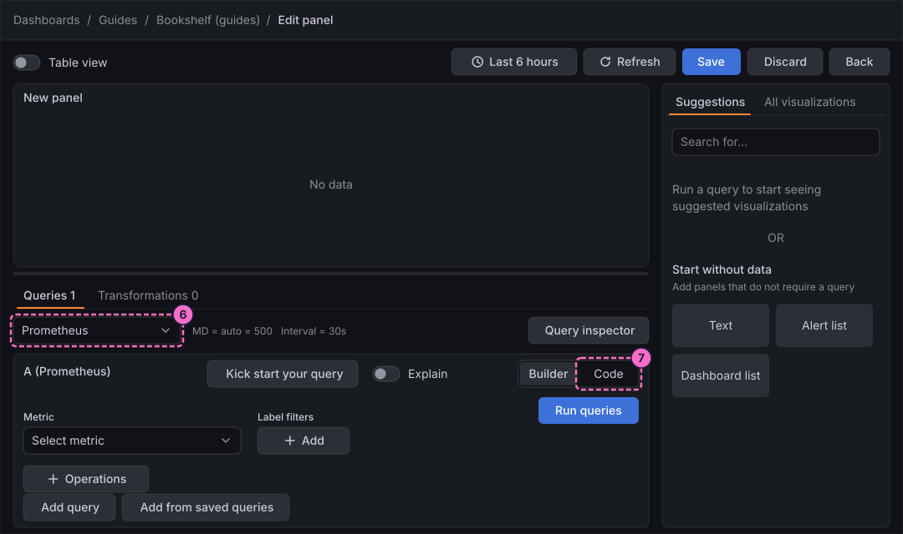
-
Click inside the query editor first, so that it has the focus, then type the query, which sums the request rate of the Bookshelf service by route:
sum by (uri) (rate(http_server_requests_seconds_count{application="bookshelf"}[1m])) -
Below the editor, click the Options line to open it, then open the Format list and choose Table. A table needs one row per route, not one line per series.
-
In the same row, open the Type list and choose Instant, so that the query returns the latest value of each route instead of a whole time range.
-
Click Run queries.
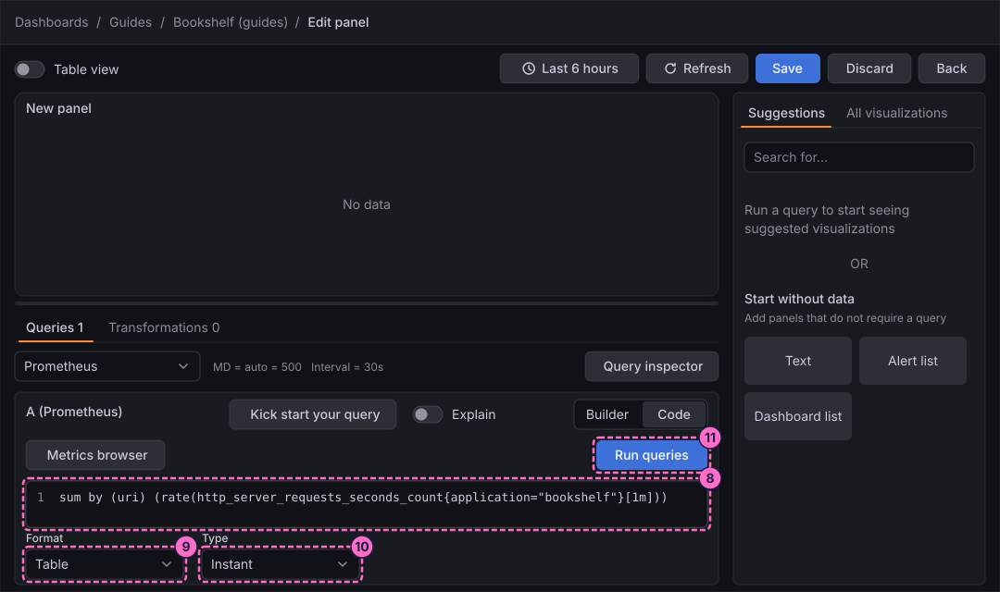
Show the data as a table
-
In the right column, click the All visualizations tab, then click Table ("Supports many column styles"). The Suggestions tab offers a Table card as well.
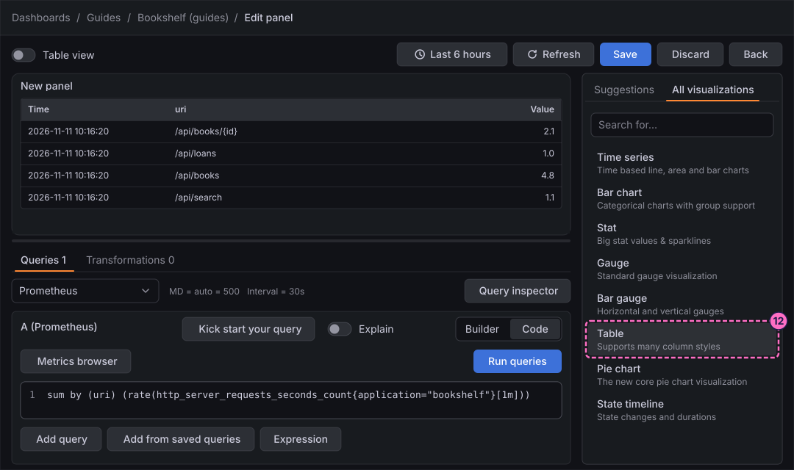
-
The right column becomes the options pane, headed Table. Open Panel options and type
Requests per second by routein Title.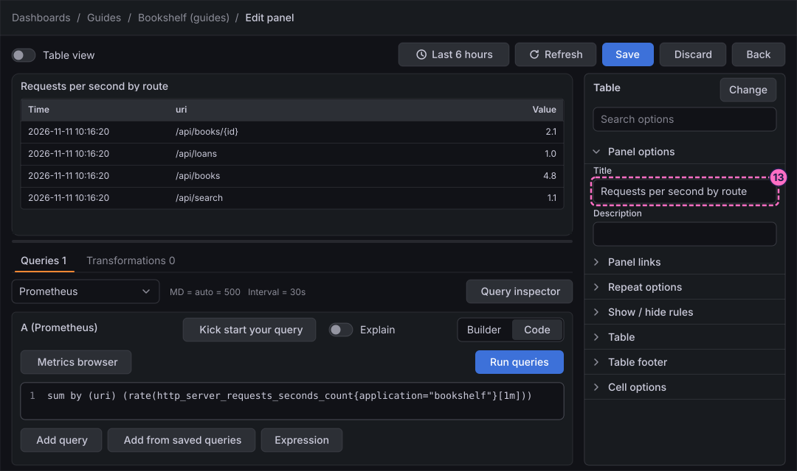
Organize and rename the columns
-
At the bottom of the editor, click the Transformations tab.
-
Click Add transformation.
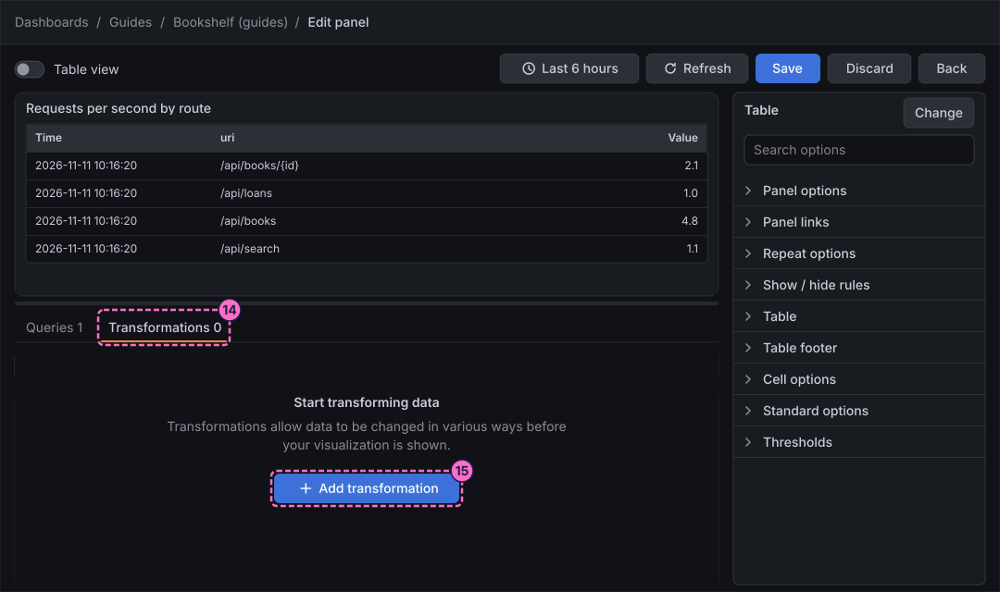
-
In the drawer Add another transformation, find Organize fields by name in the alphabetical list and click it.
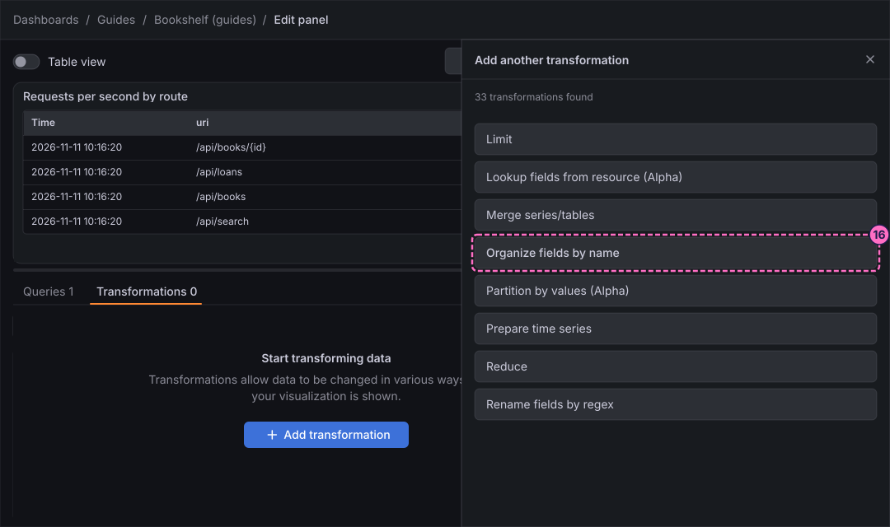
-
In the transformation, switch off the field Time, which the table does not need. The Time column disappears from the preview.
-
On the row of the field
uri, typeRouteas its new name. -
On the row of the field
Value, typeRequests per secondas its new name.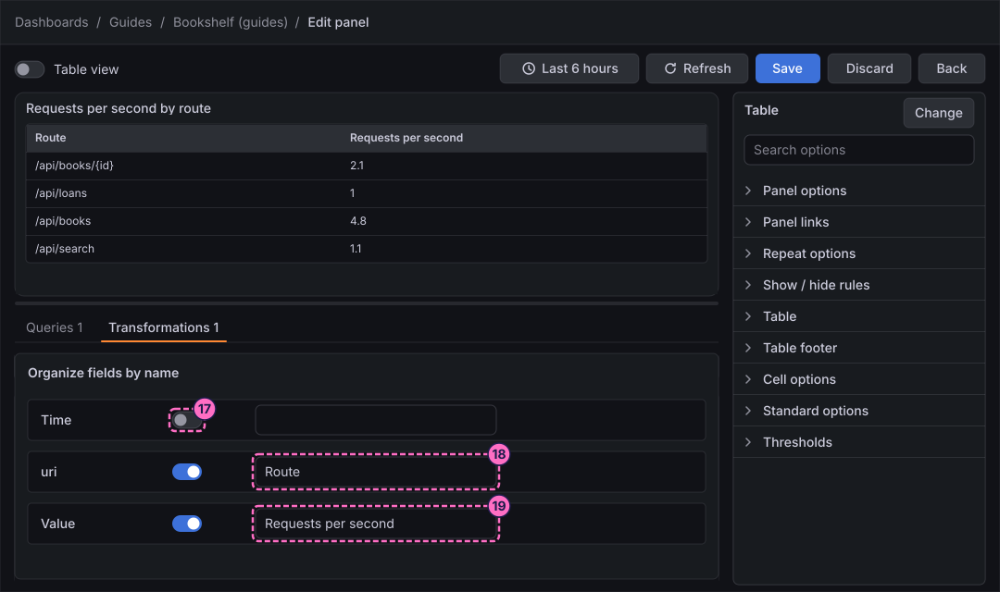
Draw the values as gauges
-
In the options pane, open Cell options.
-
Open Cell type and choose the gauge type. Every numeric column is drawn as a bar; the text column Route keeps plain text.
-
Open Standard options and type
0in Min. -
Type
10in Max, so that a bar is full at 10 requests per second.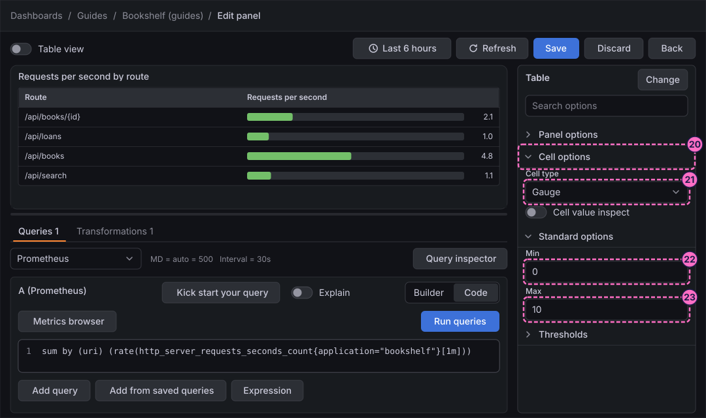
Override one column
-
At the end of the options pane, click Add field override.
-
Choose the matcher that selects a field by its name, then pick the field
Route. -
Add an override property, choose Column width and type
240. The column of the routes is now narrower than the default; the override changes this column only.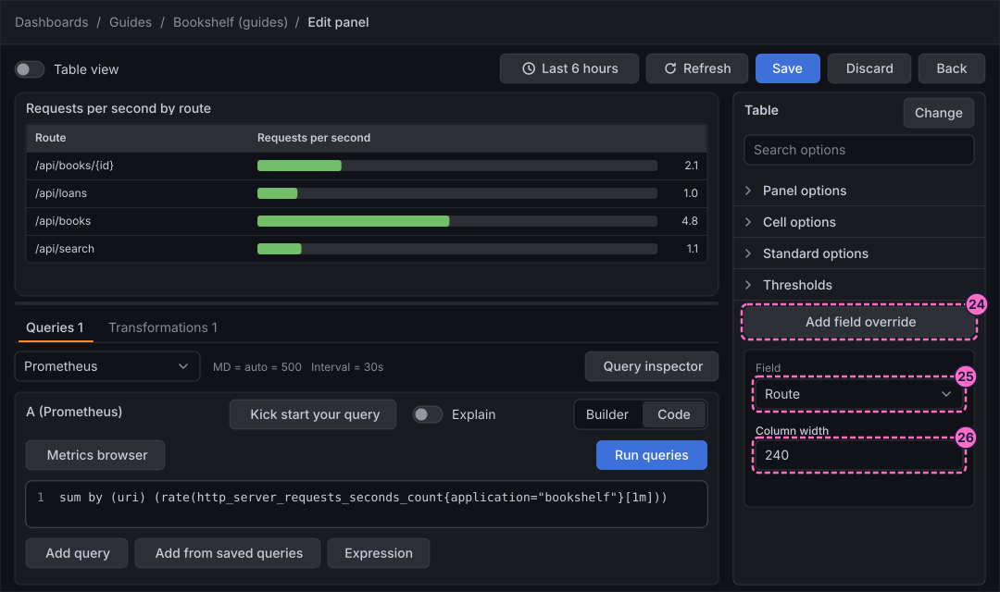
Add a filter and a footer, then sort
-
In the options pane, open Table and switch on Column filter. Every header gets a filter icon.
-
Open Table footer and set Calculation to the calculation that adds up the values, so that the footer shows the total request rate.
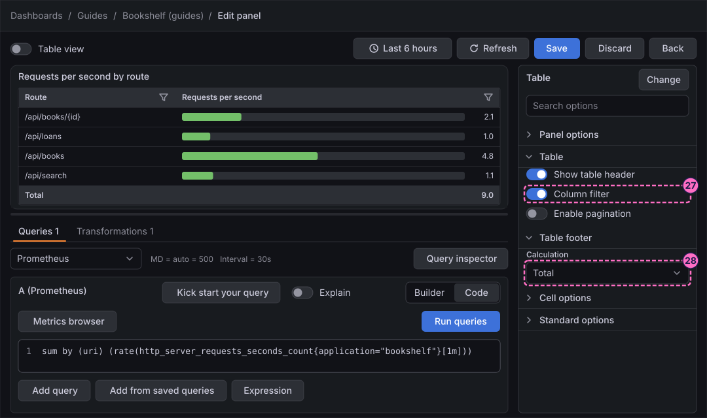
-
Click Save in the header of the editor. The 13.3 panel editor has no Apply button.
-
In the Save dashboard drawer, click Save.
-
Click Back to return to the dashboard.
-
Click Exit edit. If Grafana 13.3.0 shows the dialog Unsaved changes, click Save and click Save again in the drawer, as in the first dashboard guide.
-
In the dashboard, click the header Requests per second to sort the rows by rate; click it again to reverse the order.
-
Click the filter icon in the header Route to keep only some of the routes.
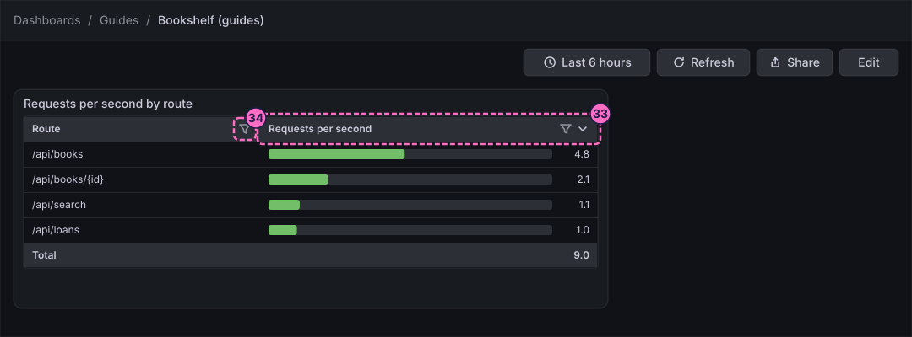
Check the result
Open Dashboards → Guides → Bookshelf (guides). The panel Requests per second by route must show one row for each of the routes
/api/books, /api/books/{id}, /api/search and /api/loans, a bar and a number in the second column, and a footer row under the last route.
To see the numbers move, send errors and press Refresh after a minute:
curl -X POST localhost:8090/mode/failingRestore normal traffic afterwards, and check the mode of the load generator at any time:
curl -X POST localhost:8090/mode/normal
curl localhost:8090/Variations
-
Draw the numbers with a coloured background instead of a bar: in Cell options, open Cell type and choose the coloured background type, then set the colours in Thresholds.
-
Show a small chart in each row: the sparkline cell type needs one time series per row, which the transformation Time series to table prepares from a range query.
-
Link a row to a detail dashboard: add a link under Data links and actions and pick the cell type that shows data links. The guide on thresholds, value mappings, overrides and data links builds one.
-
Page the rows instead of scrolling: switch on Enable pagination under Table.
What can go wrong
| Symptom | Cause | Fix |
|---|---|---|
The table has one row per time step, or no Route column to rename |
Format is still Time series or Type is Range, so the query returns series and not one row per route. |
Open the Options line under the query, set Format to Table and Type to Instant, and run the query again. |
The table is empty or says No data |
The query was typed before the editor had the focus, or the lab started less than a minute ago. |
Click in the editor, select all with Ctrl+A (Cmd+A on macOS), type the query again, and press Run queries after a minute. |
The renamed column titles are not shown |
The transformation was added but the names were typed on a different row, or the editor was left before the field lost the focus. |
Open the Transformations tab and check the name typed on the row of each field. |
All bars are full, or all are almost empty |
Min and Max are not set, so Grafana scales the bars to the data. |
Under Standard options, type |
Exit edit keeps showing Unsaved changes |
Grafana 13.3.0 raises the dialog even after a save. |
Click Save, and Save again in the drawer; the dialog does not return once edit mode has closed. |
Clean up
Keep the panel: the guide on thresholds, value mappings, overrides and data links extends it. To remove it, open the dashboard, click Edit, open the menu of the panel and delete it, then save the dashboard.
Where to go next
-
Previous guide: Stat, gauge and bar gauge.
-
Next guide: Bar chart, pie, histogram and heatmap, which draws the same request rates as categories and distributions.
-
Reference: Grafana Stats, Tables and Widgets covers every table option, and Grafana Field Configuration covers units, thresholds, mappings and overrides.